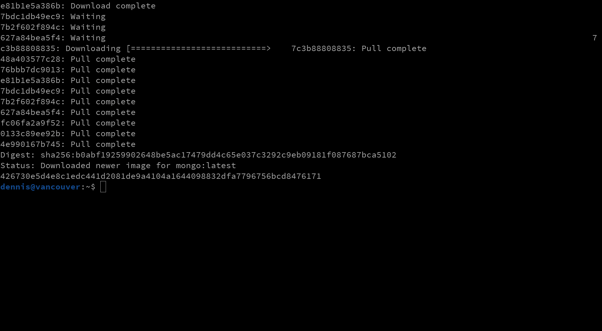

Docker ist eine **Laufzeitumgebung zur Isolation laufender Prozesse**
unter Linux. (Aktuelle Versionen von Microsoft Windows unterstützen diese
Funktion inzwischen auch). Die Programme werden hierfür mit allen für ihre
Ausführung benötigten Systembibliotheken und Hilfsdateien in binäre Filesystem
Images (hier **Container Image** genannt) verpackt und dann durch den
Docker Daemon also sog. **Container** ausgeführt, wobei das Wort
Container hier die Isolation der Prozesse verdeutlichen soll.
Intern werden hierfür verschiedene Mechanismen des Linux-Kernels genutzt,
um den Programmen vorzugaukeln, dass sie die einzigen laufenden Programme
innerhalb des Betriebssystems wären. Gute Container Images starten daher
tatsächlich nur einen Prozess, der automatisch die **Prozess-ID 1**
bekommt.
Darüber hinaus virtualisiert Docker das Netzwerk sowie den Massenspeicher,
um die Container noch weiter voneinander zu isolieren. Zusammengehörige
Container können über ein **virtuelles Netzwerk** untereinander
kommunizieren und einzelne Ports können vom Host an die Container
weitergeleitet werden.
Wichtig zu verstehen ist, dass Container ,,immutabel'' sind, was bedeutet,
dass sie zwar Dateien in ihrem virtuellen Dateisystem erzeugen können,
diese bei einem Neustart des Containers aber verloren gehen. Über sog.
**Volumes** können stattdessen externe Massenspeicher angebunden
werden, um persistente Daten abzulegen.
